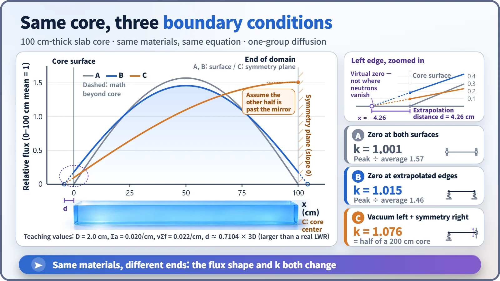
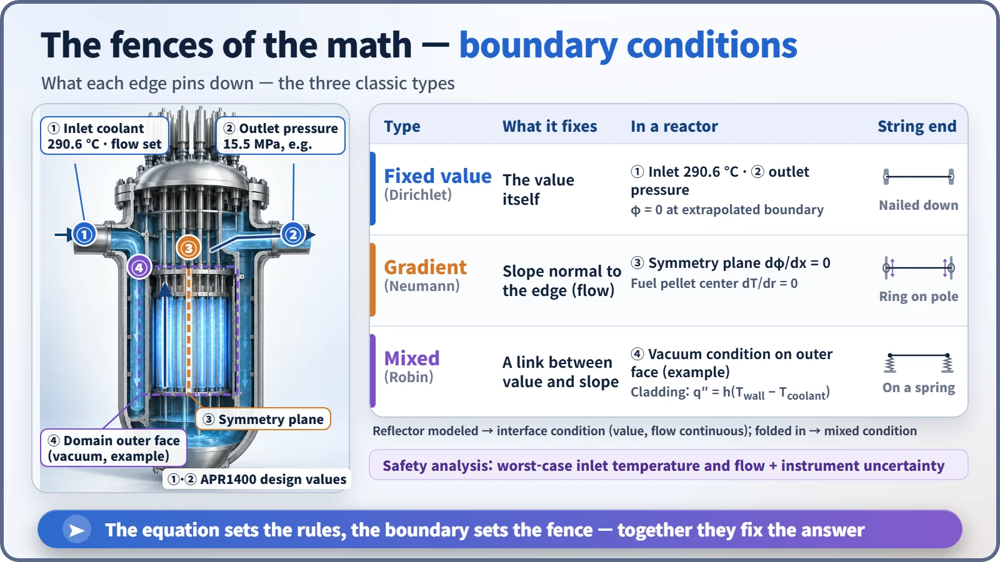

Modeling, Simulation & Computation · 256
How You Hold the Ends Decides the Shape — Why Boundary Conditions Matter in Reactor Calculations
A differential equation gives the rule; the boundary condition picks the answer. Change only the edges and both the flux shape and k change.
A differential equation only gives the rule; the boundary condition at the edges picks the one solution that fits reality. In a reactor calculation, changing nothing but the edge condition changes both the shape of the neutron flux and the multiplication factor k, which is why the first question about any result should be "how did you hold the ends?" [1]
A riddle with two guitar strings
Two identical guitar strings: same material, same length, same tension. Pluck them, and one sounds exactly an octave lower. What's different?
The ends. The first string is tied to a nail at each end. The second has one end tied to a ring that slides freely up and down a smooth pole. The string itself never changed, but how its end is held changed the way it vibrates and the note it plays. For an ideal string, the frequency drops to exactly half. People who calculate nuclear reactors solve this riddle every day, and its name is the boundary condition.
A rule alone doesn't give you an answer
The neutron distribution in a reactor is calculated with the diffusion equation, a differential equation. But a differential equation only states a rule: how the value at one point connects to its neighbors. Countless curves obey the same rule, just as one law of vibration gives a string many shapes depending on its ends.
So one more thing must be specified: what value, or what slope, the answer must have at the edge of the region being calculated. That is the boundary condition, the promise made at the edges that picks, out of all the equation's solutions, the one that fits the real situation. A one-dimensional core usually needs two, one at each end. [1]
Nail, ring, spring: three ways to hold an end
| Type | What it fixes | Reactor example | String end |
|---|---|---|---|
| Fixed value (Dirichlet) | The value itself | Flux = 0 at a boundary; core inlet coolant at 290.6 °C | Tied to a nail |
| Gradient (Neumann) | The slope, which for neutrons is the net flow across the edge | Zero slope at a symmetry plane: no net flow crosses it | Ring sliding on a smooth pole |
| Mixed (Robin) | A relation between value and slope | Heat leaving a fuel rod surface is proportional to the surface-to-coolant temperature difference | Hung on a spring |
A ring on a smooth pole always meets the pole at a right angle, so the string's slope there is zero. In neutron calculations the slope is the flow across the boundary, so a zero slope means "no net flow crosses this surface."
The promises made at a reactor's edge
Suppose the space outside the core is empty and sends no neutrons back. Nothing comes in, yet the flux at the core surface is not exactly zero, because neutrons are leaving through it. Diffusion theory extends the curve from just inside the surface outward in a straight line and sets the flux to zero where that line reaches zero, on an imaginary line slightly outside the surface. That distance is the extrapolation distance. In theory it is about 0.71 times the transport mean free path (the average distance a neutron travels before changing direction); for thermal neutrons in water it is only a few millimeters. [1]
This line is not where neutrons actually disappear. It is a reference line drawn to make the calculation come out right.
When a core is symmetric, the flows from left and right cancel at the center plane, so a zero-slope condition there lets you calculate only half the core. In real pressurized water reactor design it is common to calculate just one quarter of the core. If a reflector (a layer that sends neutrons back) surrounds the core, the boundary is moved to the outside of the reflector, or the core surface gets a mixed condition that captures how much comes back.
Same core, different ends
We ran the numbers for a slab core 100 cm thick with identical materials and equation, changing only the boundary conditions. This is a teaching example: the extrapolation distance is deliberately enlarged to 4.26 cm so it shows up in the figure.

Pin the flux to zero right at both surfaces and the effective multiplication factor k (how many neutrons one generation leaves for the next) is 1.001. With extrapolated boundaries, the edge flux comes back to about 0.18 times the average and k becomes 1.015. Turn the right end into a symmetry plane and the curve tilts to one side, pushing k to 1.076, exactly the result for half of a 200 cm-thick core.
Whether k is above or below 1 decides whether a chain reaction sustains itself. The materials never changed, yet one promise at the edge moved the margin of that judgment by several percent. The lower power near a core's edge comes from neutrons leaking outward, and this edge condition is what captures that leakage in the calculation.
Heat and water have gatekeepers too
When calculating the coolant flowing through the core, the inlet temperature and flow rate and the outlet pressure are supplied as boundary values. For the South Korean APR1400 reactor, a core inlet temperature of 290.6 °C and a coolant pressure of 15.5 MPa go into those slots, and the outlet temperature (about 323.9 °C) is what the calculation produces. Inside a single fuel rod, the pellet center gets a zero slope by symmetry, and the outside of the cladding gets a mixed condition in which heat leaves in proportion to the temperature difference with the coolant. [2]

That is why safety analysis deliberately sets boundary values toward the unfavorable side for each item evaluated. When checking fuel cooling margin, for example, the inlet temperature is set high and the flow low, with instrument error added on top. The numbers put in at the boundary drag the whole result along with them.
In the end, a person decides the ends
"Boundary conditions are a minor finishing touch." They are a core input that changes the shape of the distribution and k wholesale.
"There is one right answer." A boundary condition is an assumption, such as "this core is symmetric" or "the outside is empty." Apply a symmetry-plane condition when a single withdrawn control rod has broken the symmetry and the answer is wrong.
"It's the same as an initial condition." An initial condition sets the state at the starting time. If the initial condition is the starting line in time, the boundary condition is the fence in space.
Key takeaways
Just as a guitar string's pitch is set by its ends rather than the string, the answer to a reactor calculation is set at its edges. Whenever you look at a calculated result, it's worth asking before anything about the equation: "How did you hold the ends?"